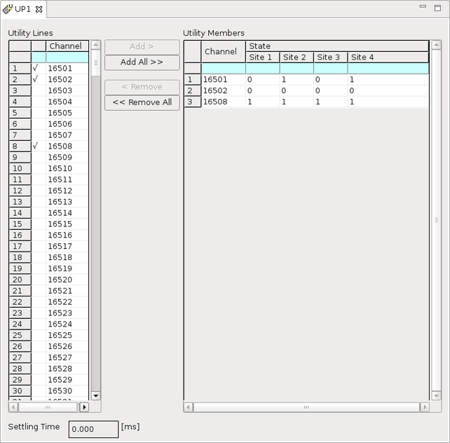

Utility Purpose Editor
In this editor, you select utility lines for a utility purpose.
The following figure displays the configuration settings of utility purpose UP1. UP1 has three members: 16501, 16502, and 16508.

The editor title is the name of the utility purpose. It can have up to 16 alphanumeric characters. It must not contain spaces, or any of the following characters:
# ; ('' ) ? @ ,
In the Utility Lines area, the "√" symbol preceding with the utility line means that this utility line has been added to the current utility purpose.
The Utility Members area shows the selected utility lines with the setting states of each site: 1, 0, or X (Do not care).
The Settling Time text box shows wait time after the write action of the utility purpose, such as the settling time of the user relays controlled by the defined utility purpose. The range is 0 ... 2147483.646. ms. For multi-site testing, you must set the same value for all sites.
Functional changes
- Introduced before SmarTest 6.3.2
- SmarTest 7.1.3: The site information is moved to the Utility Members area.
- SmarTest 7.1.3: The state buttons are removed.
- SmarTest 7.2.0: Utility Purpose view introduced
- SmarTest 7.10.1: Three-digit utility pogo block designator on V93000 EXA Scale systems.